I’d choose parchment for the site, and you suspected right. The site is read the way the letter is written, at a book’s measure, for several minutes, and dark ink on warm paper is kinder over that length than cream on indigo. It also lets the site and the app be a pair: the site is the daylight cover, and the app opens on night, so the first launch feels like turning the lamp on. Night stays one click away in the header (“Page: night / parchment”, remembered between visits), and it carries the Open Graph image, where it holds up better in a feed of white cards.
On the faces: EB Garamond for the prose, Fraunces for the headings, Courier Prime for everything you’d label or scan; Space Grotesk survives in the wordmark alone. Only the prose, the parts written as sentences, is in the serif. That split is what makes it read as a letter rather than an interface. The home page has a tweak to set it in Space Grotesk instead, so you can compare the two.
Glyph 34px · wordmark Space Grotesk 600, 26px, −0.04em · descriptor JetBrains Mono 10.5px caps, +0.09em, behind a hairline. Below 560px the descriptor wraps under the wordmark; never drop the glyph.





A ends a major section (home); B separates the rooms (How it works); C is for quiet breaks. Always at the reading column’s width, 36rem, left-aligned with the text, never centred on the page. Smaller pauses use a 1px dashed hairline.
what it shows, in a few words
- Mat: 6–7px of the darker ground, 1px rule outside, 1px fainter rule round the image.
- Flat. No shadow, no tilt, no device, no rounding.
- Three sizes: wide (full page, one per screen), column (36rem), actual size (1:1, say so in the caption).
- Caption under, or hung in the margin beside, never on top.
- Swap the striped box for <img> at 2× pixels, same aspect ratio.
A paragraph at a book’s measure, about sixty-five characters to the line, with a real footnote1 and a note in the margin beside it.
- 1Footnotes gather at the end of their section, 15px, with a ↩ back to the mark. ↩
Built as a wrapping row (text 30–36rem, note 12rem, 44px gap), so on a phone the note drops under its paragraph instead of vanishing. Leave a row’s note empty more often than not.
Amber means clickable and nothing else. One filled button per screen at most. On parchment the amber is darkened to #94551a so link text reads at 5:1.
1200 × 630

 Otto
Otto
An almanac for one invented world, kept on your own computer and nowhere else.

 Otto
Otto
An almanac for one invented world, kept on your own computer and nowhere else.
Use night as the og:image; parchment for places that prefer a light card. Both at actual size here.